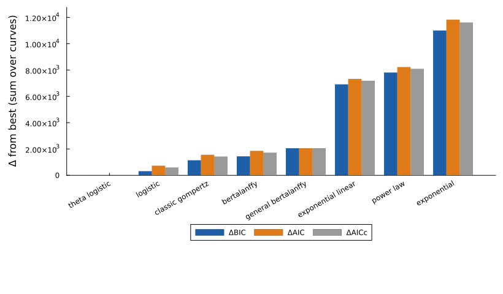
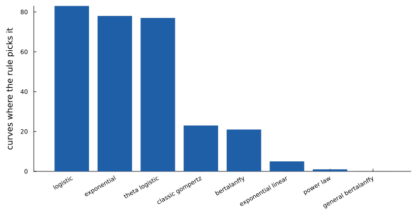
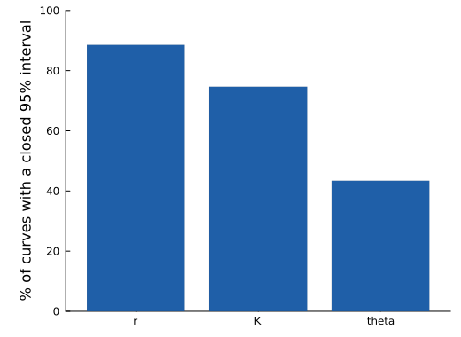
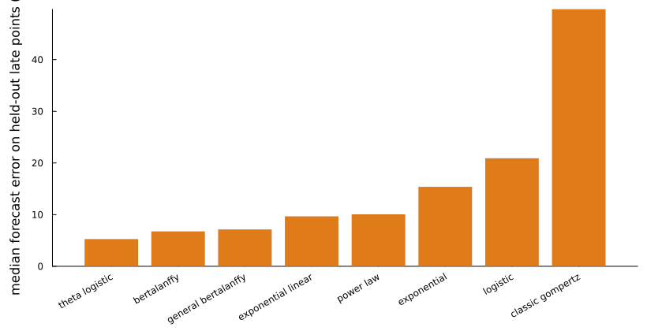

H3122 parental vs alectinib-resistant co-culture
Kaznatcheev A et al. (2019) Nat Ecol Evol 3:450-456 · doi:10.1038/s41559-018-0768-z · source: https://github.com/kaznatcheev/GameAssay · licence: GPL-3.0 (repository)
H3122 lung cancer cells (ALK-positive): an alectinib-sensitive parental line and an alectinib-resistant line, labelled with different fluorescent proteins and grown together at a range of starting mixtures, with and without cancer-associated fibroblasts (CAFs), imaged every few hours for about five days. Kaznatcheev and colleagues used the early growth rates of the two populations to measure the evolutionary game between them and showed that the drug and the fibroblasts change that game.
What this page fits. Each population in each untreated (DMSO) well is treated as its own curve, measured as fluorescent area (pixels), and fitted with the single-population panel. The two lines interact in these wells, so this is a first look at how each population grows, not a model of the interaction; the alectinib wells and a two-population competition model are left for a later treated-data page.
Reading the result. Over five days most populations are still accelerating out of a lag or just beginning to slow, so the pooled data favour the theta-logistic law, whose extra shape parameter bends the curve late. Per curve the vote is split between exponential, logistic and theta-logistic growth, and the shape parameter θ has a closed interval on fewer than half of the curves. In the forecast check Gompertz does worst by far: fitted to the early points it saturates too soon.
Model comparison
Each of the 288 curves was fitted separately with every model. Criteria are summed over curves and shown as differences from the best model. The rule picks the model with the fewest parameters within 2 BIC of the best: theta logistic.
| Model | k | ΔBIC | ΔAIC | ΔAICc | Curves where picked |
|---|---|---|---|---|---|
| theta logistic (pick) | 3 | 0.0 | 0.0 | 0.0 | 77 |
| logistic | 2 | 312.7 | 725.7 | 593.2 | 83 |
| classic gompertz | 2 | 1140.8 | 1553.8 | 1421.2 | 23 |
| bertalanffy | 2 | 1439.9 | 1852.9 | 1720.3 | 21 |
| general bertalanffy | 3 | 2056.2 | 2056.2 | 2056.2 | 0 |
| exponential linear | 2 | 6905.6 | 7318.6 | 7186.1 | 5 |
| power law | 2 | 7809.7 | 8222.7 | 8090.2 | 1 |
| exponential | 1 | 10997.9 | 11823.9 | 11607.6 | 78 |



Identifiability of the pick
Profile likelihood on every curve (each parameter fixed on a grid, the others refitted; 95% cutoff χ²₁ = 3.84). A parameter counts as identifiable on a curve when its interval closes inside the bounds.
| Parameter | Median estimate | Curves identifiable (%) |
|---|---|---|
| r | 0.010 | 89 |
| K | 3.89e+05 | 75 |
| theta | 5.770 | 43 |

Forecast check
Each model was refitted on the first 70% of each curve and asked to predict the rest.
| Model | Median relative error (%) | Predictions within 20% (%) |
|---|---|---|
| theta logistic | 5.3 | 83.7 |
| bertalanffy | 6.7 | 83.2 |
| general bertalanffy | 7.1 | 83.9 |
| exponential linear | 9.7 | 81.6 |
| power law | 10.0 | 79.2 |
| exponential | 15.4 | 65.7 |
| logistic | 20.9 | 49.1 |
| classic gompertz | 49.7 | 2.4 |

Reproduce
python3 -I showcase/data/prepare.py --only kaznatcheev2019_h3122
julia --project=showcase -t auto showcase/run_pipeline.jl --only kaznatcheev2019_h3122Fitted with GrowthParameterEstimation.jl 0.5.5. Results: showcase/results/kaznatcheev2019_h3122/.